# Fundamental Java Programming and Testing
# IDE 选择
实验指导书推荐使用 Eclipse 作为 Java IDE，此处使用 IntelliJ IDEA 代替 Eclipse
# 建立项目
选择建立 Java 模块项目，以便于下一步目录结构配置
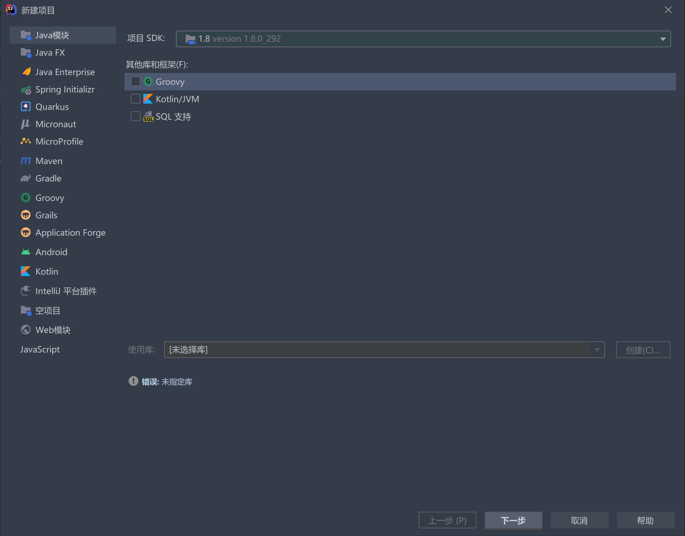
# 目录结构配置
根据实验指导书，需要按照实验指导书配置类似如下的目录结构：
Lab1-1190200703
├── src
│ ├── P1
│ │ ├── txt
│ │ │ ├── 1.txt
│ │ │ ├── ...
│ │ │ └── 5.txt
│ │ └── MagicSquare.java
│ └── P2
├── test
│ └── P1
├── lib
└── doc
2
3
4
5
6
7
8
9
10
11
12
13
在任意目录处右键选择 “将目录标记为”，可以选择 源根、测试源根等：
通过此方式，可将 src/P1 设置为 源根、将 test/P1 设置为 测试源根
# 奇数阶幻方构造
P1 是一道关于幻方的题，通过这部分学习了一种奇数阶幻方构造法即 Siamese 算法 (opens new window)，算法流程如下：
- 把 放置在第一行的中间
- 顺序将 等数放在右上方格中
- 当右上方格出界的时候，则由另一边进入
- 当右上方格中已经填有数，则把数填入正下方的方格中
- 按照以上步骤直到填写完所有 个方格
由于幻方的对称性，也可以把右上改为右下、左上以及左下等方位
以一个 阶幻方为例：
把 放置在第一行的中间：
把 放置在 的右上，由于上侧出界了，所以从下侧进入：
把 放置在 的右上，由于右侧出界了，所以从左侧进入：
把 放置在 的右上，由于右上已经填了 ，所以将 填在当前位置的正下方：
重复上述过程，直到幻方填满：
# 向量偏转角问题
# 问题概述
P2 的 Problem 6: Calculating bearings 是一道有关向量顺时针偏转角的问题
给定一个向量的起始点 A，以及从 y 轴正方向顺时针旋转到这个向量的角度
再给定另一个点 B
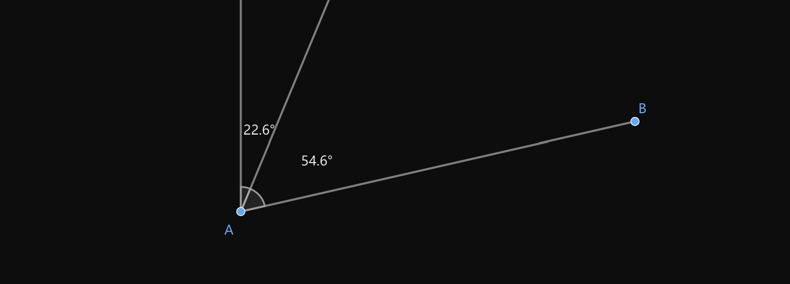
求这个向量顺时针旋转到 B，需要旋转的角度
# 解决思路
由余弦定理，两个向量 和 之间的夹角 如下：
由于这个角在 和 之间，所以需要使用向量外积确定实际的角是在 和 之间还是 和 之间
高中学的向量外积全忘了 😢 ，这里从头推导一遍
将平面向量拆成坐标形式
打开括号，得
根据
可得
所以当
时，是 顺时针转到 ，故
而当
时，是 逆时针转到 ，故
最后，当
时， 和 共线，此时有
或
而这两种情况是余弦定理能够区分的
# 凸包问题
P2 的 Problem 7: Convex hulls 是凸包问题，采用的思路如下：
- 点集如图所示
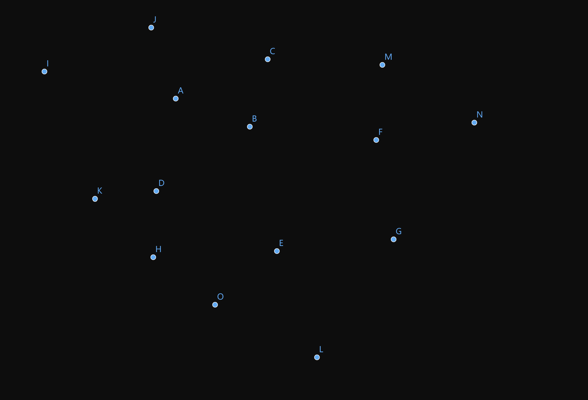
- 初始点是最左上方的点，初始方向向右
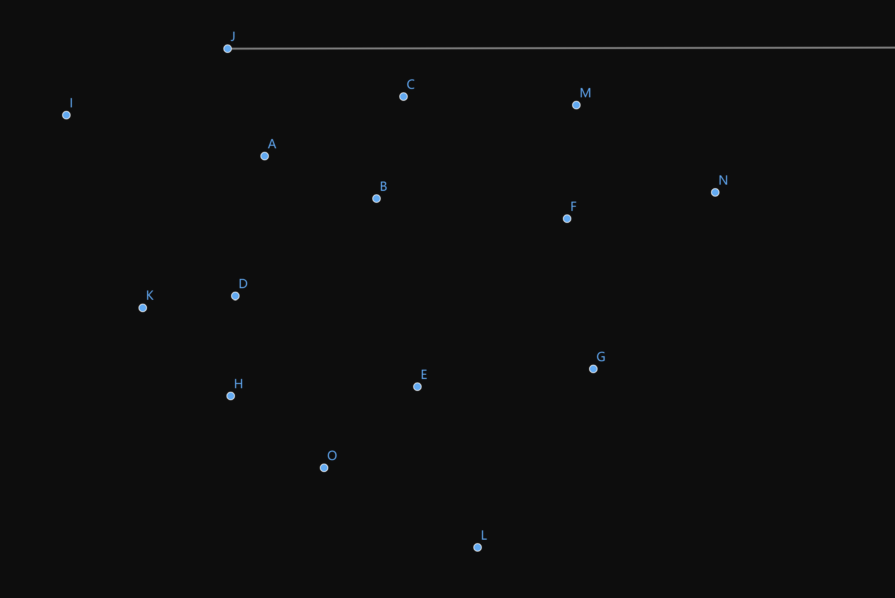
- 以当前的点为轴，依次计算从当前方向到其余各个点的顺时针偏转角
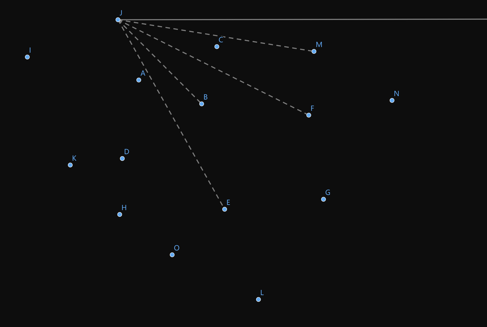
- 从所有偏转角中，取出偏转角最小的角对应的点
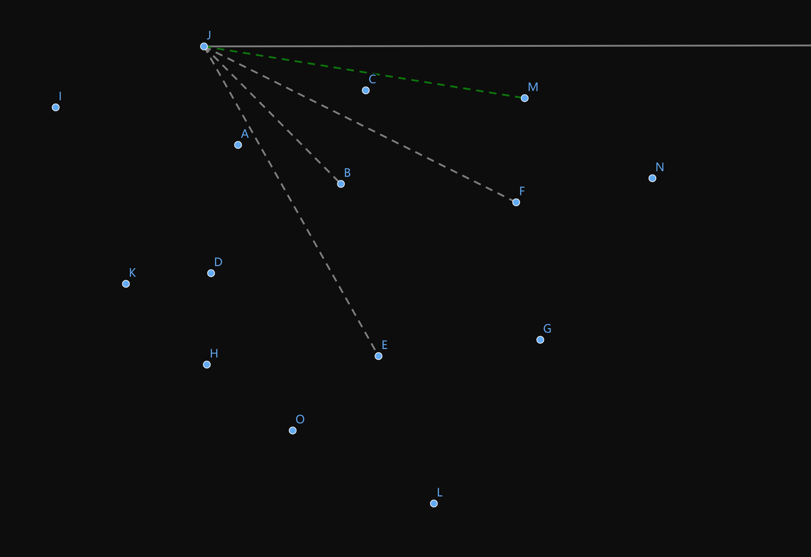
- 以这个点为轴，以此时的向量方向为基准，再次搜索偏转角最小的点
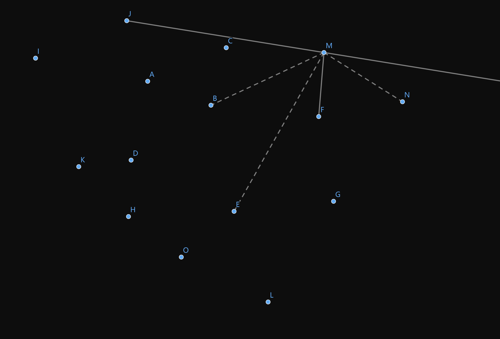
- 不断循环，直到回到初始点
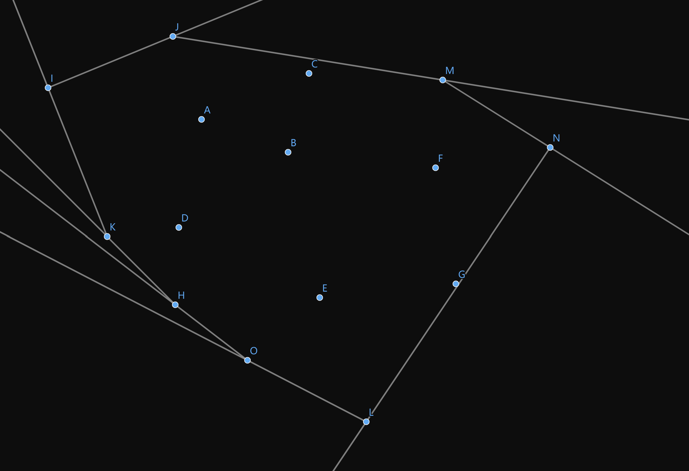
# 命令行编译运行项目
由于在编写代码时使用的是 IDEA 的一键运行功能，不能确定相同的代码在不同 IDE 下是否可以正常运行，所以学习了一下 Java 的命令行编译方法
# 寻找命令
在 IDEA 中运行 P1 的 MagicSquare 时，运行窗口输出如下：
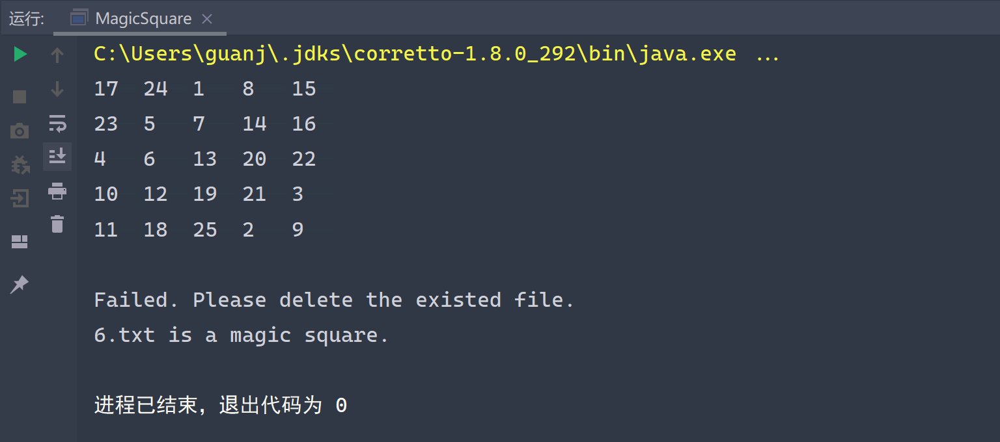
可以看到第一行折叠的黄色命令就是编译时 IDEA 自动为我们输入的编译命令：
C:\Users\guanj\.jdks\corretto-1.8.0_292\bin\java.exe "-javaagent:C:\Program Files\JetBrains\IntelliJ IDEA\lib\idea_rt.jar=51715:C:\Program Files\JetBrains\IntelliJ IDEA\bin" -Dfile.encoding=UTF-8 -classpath C:\Users\guanj\.jdks\corretto-1.8.0_292\jre\lib\charsets.jar;C:\Users\guanj\.jdks\corretto-1.8.0_292\jre\lib\ext\access-bridge-64.jar;C:\Users\guanj\.jdks\corretto-1.8.0_292\jre\lib\ext\cldrdata.jar;C:\Users\guanj\.jdks\corretto-1.8.0_292\jre\lib\ext\dnsns.jar;C:\Users\guanj\.jdks\corretto-1.8.0_292\jre\lib\ext\jaccess.jar;C:\Users\guanj\.jdks\corretto-1.8.0_292\jre\lib\ext\jfxrt.jar;C:\Users\guanj\.jdks\corretto-1.8.0_292\jre\lib\ext\localedata.jar;C:\Users\guanj\.jdks\corretto-1.8.0_292\jre\lib\ext\nashorn.jar;C:\Users\guanj\.jdks\corretto-1.8.0_292\jre\lib\ext\sunec.jar;C:\Users\guanj\.jdks\corretto-1.8.0_292\jre\lib\ext\sunjce_provider.jar;C:\Users\guanj\.jdks\corretto-1.8.0_292\jre\lib\ext\sunmscapi.jar;C:\Users\guanj\.jdks\corretto-1.8.0_292\jre\lib\ext\sunpkcs11.jar;C:\Users\guanj\.jdks\corretto-1.8.0_292\jre\lib\ext\zipfs.jar;C:\Users\guanj\.jdks\corretto-1.8.0_292\jre\lib\jce.jar;C:\Users\guanj\.jdks\corretto-1.8.0_292\jre\lib\jfr.jar;C:\Users\guanj\.jdks\corretto-1.8.0_292\jre\lib\jfxswt.jar;C:\Users\guanj\.jdks\corretto-1.8.0_292\jre\lib\jsse.jar;C:\Users\guanj\.jdks\corretto-1.8.0_292\jre\lib\management-agent.jar;C:\Users\guanj\.jdks\corretto-1.8.0_292\jre\lib\resources.jar;C:\Users\guanj\.jdks\corretto-1.8.0_292\jre\lib\rt.jar;D:\Code\SoftwareConstruction\Lab-1\out\production\Lab-1;D:\Code\SoftwareConstruction\Lab-1\lib\junit-4.13.1.jar;D:\Code\SoftwareConstruction\Lab-1\lib\hamcrest-core-1.3.jar MagicSquare
直接复制上述命令到 powershell 中是可以运行成功的，但是这个命令里有太多绝对路径了。所以先简单学习一下 Java 命令行编译方法，再尝试修改绝对路径为相对路径
# 命令行编译基础
假设有如下代码：
/**
* HelloWorld.java
*/
public class HelloWorld {
public static void main(String []args) {
System.out.println("Hello World");
}
}
2
3
4
5
6
7
8
首先用 javac 将 .java 编译为 .class
javac HelloWorld.java
再用 java 运行 .class 即可
java HelloWorld
-classpath选项用于引入外部 jar 库，例如需要注意的是，多个 jar 库需要用分号
;间隔开javac -classpath "./lib/A.jar;./lib/B.jar" HelloWorld.java1-encoding选项用于指定文件编码，这里使用utf8javac -encoding utf8 HelloWorld.java1-d选项用于指定生成的.class文件的存放位置，例如javac -d ./out HelloWorld.java1-javaagent选项是帮助开发人员进行运行、调试的。经测试不加此选项也可正常运行
# 修改命令
命令中第一部分
C:\Users\guanj\.jdks\corretto-1.8.0_292\bin\java.exe1本应该是运行
.class的命令，观察原命令可发现其中的-classpath中有一个D:\Code\SoftwareConstruction\Lab-1\out\production\Lab-11查看这个目录
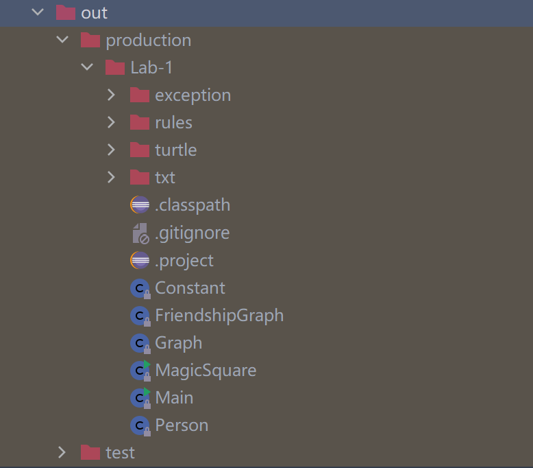
可知这里存放的就是
.class文件。推测 IDEA 是将javac和java两个命令合并了命令中第二部分
-javaagent:C:\Program Files\JetBrains\IntelliJ IDEA\lib\idea_rt.jar=51715:C:\Program Files\JetBrains\IntelliJ IDEA\bin1是
-javaagent选项，可以删去命令中第三部分
-Dfile.encoding=UTF-81是指定文件编码，这里我用
-encoding utf81代替
命令中的第四部分
-classpath C:\Users\guanj\.jdks\corretto-1.8.0_292\jre\lib\charsets.jar;...1是外部库，可以看到这些库都放在
C:\Users\guanj\.jdks\corretto-1.8.0_292\jre\lib\1之中。于是手动查找这些库，将它们复制到
Lab1-1190200703/lib/中于是这部分可以改为
-classpath .\lib\charsets.jar;...1注意到刚才发现的
javac和java命令合并的问题，所以拆分之后的两个-classpath如下javac ... -classpath .\lib\charsets.jar;...1java ... -classpath .\out;.\lib\charsets.jar;...1综上，修改后的命令如下：
# P1.ps1 mkdir out/P1 javac -classpath "./lib/charsets.jar;./lib/access-bridge-64.jar;./lib/cldrdata.jar;./lib/dnsns.jar;./lib/jaccess.jar;./lib/jfxrt.jar;./lib/localedata.jar;./lib/nashorn.jar;./lib/sunec.jar;./lib/sunjce_provider.jar;./lib/sunmscapi.jar;./lib/sunpkcs11.jar;./lib/zipfs.jar;./lib/jce.jar;./lib/jfr.jar;./lib/jfxswt.jar;./lib/jsse.jar;./lib/management-agent.jar;./lib/resources.jar;./lib/rt.jar;./lib/junit-4.13.1.jar;./lib/hamcrest-core-1.3.jar" ./src/P1/*.java ./src/P1/exception/*.java -encoding utf8 -d ./out/P1 java -classpath "./lib/charsets.jar;./lib/access-bridge-64.jar;./lib/cldrdata.jar;./lib/dnsns.jar;./lib/jaccess.jar;./lib/jfxrt.jar;./lib/localedata.jar;./lib/nashorn.jar;./lib/sunec.jar;./lib/sunjce_provider.jar;./lib/sunmscapi.jar;./lib/sunpkcs11.jar;./lib/zipfs.jar;./lib/jce.jar;./lib/jfr.jar;./lib/jfxswt.jar;./lib/jsse.jar;./lib/management-agent.jar;./lib/resources.jar;./lib/rt.jar;./lib/junit-4.13.1.jar;./lib/hamcrest-core-1.3.jar;./out/P1" MagicSquare1
2
3
4
5P2 和 P3 同理：
# P2.ps1 mkdir out/P2 javac -classpath "./lib/charsets.jar;./lib/access-bridge-64.jar;./lib/cldrdata.jar;./lib/dnsns.jar;./lib/jaccess.jar;./lib/jfxrt.jar;./lib/localedata.jar;./lib/nashorn.jar;./lib/sunec.jar;./lib/sunjce_provider.jar;./lib/sunmscapi.jar;./lib/sunpkcs11.jar;./lib/zipfs.jar;./lib/jce.jar;./lib/jfr.jar;./lib/jfxswt.jar;./lib/jsse.jar;./lib/management-agent.jar;./lib/resources.jar;./lib/rt.jar;./lib/junit-4.13.1.jar;./lib/hamcrest-core-1.3.jar" ./src/P2/rules/*.java ./src/P2/turtle/*.java -encoding utf8 -d ./out/P2 java -classpath "./lib/charsets.jar;./lib/access-bridge-64.jar;./lib/cldrdata.jar;./lib/dnsns.jar;./lib/jaccess.jar;./lib/jfxrt.jar;./lib/localedata.jar;./lib/nashorn.jar;./lib/sunec.jar;./lib/sunjce_provider.jar;./lib/sunmscapi.jar;./lib/sunpkcs11.jar;./lib/zipfs.jar;./lib/jce.jar;./lib/jfr.jar;./lib/jfxswt.jar;./lib/jsse.jar;./lib/management-agent.jar;./lib/resources.jar;./lib/rt.jar;./lib/junit-4.13.1.jar;./lib/hamcrest-core-1.3.jar;./out/P2" turtle.TurtleSoup1
2
3
4
5# P3.ps1 mkdir out/P3 javac -classpath "./lib/charsets.jar;./lib/access-bridge-64.jar;./lib/cldrdata.jar;./lib/dnsns.jar;./lib/jaccess.jar;./lib/jfxrt.jar;./lib/localedata.jar;./lib/nashorn.jar;./lib/sunec.jar;./lib/sunjce_provider.jar;./lib/sunmscapi.jar;./lib/sunpkcs11.jar;./lib/zipfs.jar;./lib/jce.jar;./lib/jfr.jar;./lib/jfxswt.jar;./lib/jsse.jar;./lib/management-agent.jar;./lib/resources.jar;./lib/rt.jar;./lib/junit-4.13.1.jar;./lib/hamcrest-core-1.3.jar" ./src/P3/*.java ./src/P3/exception/*.java -encoding utf8 -d ./out/P3 java -classpath "./lib/charsets.jar;./lib/access-bridge-64.jar;./lib/cldrdata.jar;./lib/dnsns.jar;./lib/jaccess.jar;./lib/jfxrt.jar;./lib/localedata.jar;./lib/nashorn.jar;./lib/sunec.jar;./lib/sunjce_provider.jar;./lib/sunmscapi.jar;./lib/sunpkcs11.jar;./lib/zipfs.jar;./lib/jce.jar;./lib/jfr.jar;./lib/jfxswt.jar;./lib/jsse.jar;./lib/management-agent.jar;./lib/resources.jar;./lib/rt.jar;./lib/junit-4.13.1.jar;./lib/hamcrest-core-1.3.jar;./out/P3" Main1
2
3
4
5用 powershell 执行脚本，即可运行程序
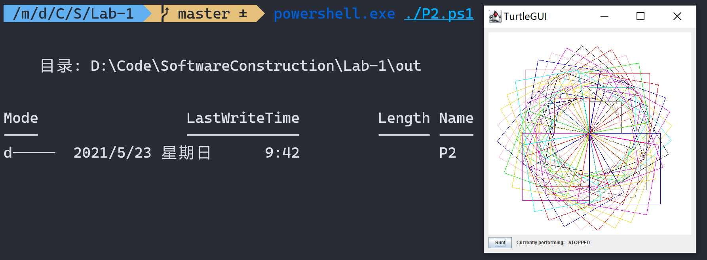
费了好大劲做完这三个脚本之后发现，我的 Lab1 项目在 Eclipse 上可以完美运行
可恶！😭 😭 😭